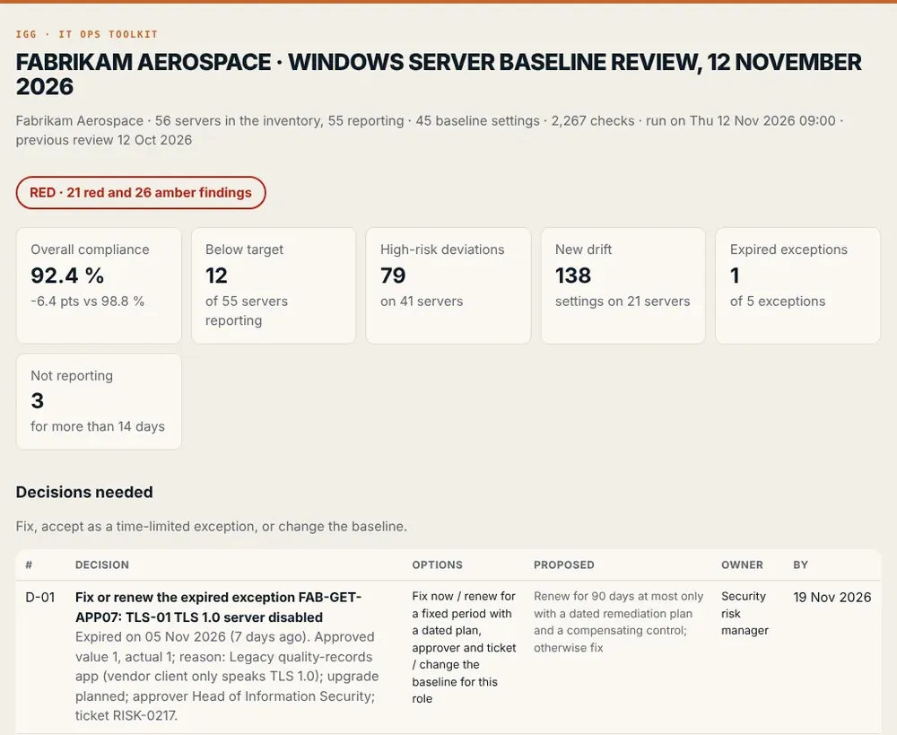

De los 138 ajustes de seguridad que se desviaron en un mes en los servidores Windows de una empresa, 112 tienen una sola causa: un grupo de servidores pasó a una OU nueva por un proyecto y la GPO que aplica la línea base nunca se vinculó allí. Así lo detecta la revisión de la línea base de Windows Server que acompaña a este post, un proyecto de código abierto que se ejecuta con datos de ejemplo de un fabricante aeroespacial inventado, con dos sedes, 56 servidores y una línea base de 45 ajustes, revisado el 12 de noviembre con los problemas puestos a propósito.
Una línea base de seguridad es la lista aprobada de cómo debe estar configurado cada servidor, y una GPO, un objeto de directiva de grupo, es la forma en que Active Directory lleva esos ajustes a los servidores de una OU, una unidad organizativa. En los servidores que se quedaron sin la GPO, LLMNR, NTLM, TLS 1.0 y RDP volvieron a sus valores por defecto sin que nadie se diera cuenta. La revisión asigna a cada desviación la primera causa que encaja, a partir de los resultados de las directivas, las excepciones y el origen del valor, así que la GPO aparece primero en el informe en lugar de 112 líneas sueltas.
El cumplimiento cae del 98,8 % al 92,4 %
El parque de la demo está en rojo: un 92,4 % de cumplimiento frente al 98,8 % de hace un mes, y 79 desviaciones de alto riesgo en 41 servidores. El cumplimiento se mide sobre cada ajuste que aplica en cada servidor, por nivel y rol, y se enseña por servidor, área, nivel, sede y entorno frente a un objetivo por nivel. La recogida del mes anterior se evalúa con las mismas reglas, y así la herramienta distingue lo que es nuevo.
Las desviaciones de alto riesgo van primero: SMBv1, LM y NTLMv1, LLMNR, RDP sin NLA, LAPS, la protección en tiempo real de Defender, reglas ASR en auditoría donde deberían bloquear, la auditoría de inicios de sesión y bloqueos, el registro de bloques de script de PowerShell, la cola de impresión en los controladores de dominio, TLS 1.0 y 1.1, y los perfiles del firewall.
SMBv1 activo otra vez en los servidores de ficheros y un piloto que nunca terminó
El resto de causas son las de siempre, cambio razonable a cambio razonable. Una integración con un escáner necesitaba SMBv1, el antiguo protocolo para compartir ficheros, y alguien lo volvió a activar a mano en los servidores de ficheros. Los servidores nuevos no están en el grupo de LAPS, la herramienta que rota la contraseña del administrador local. Una GPO de pruebas vuelve a activar LLMNR «para que funcionen las pruebas», y la cola de impresión acabó en automático en un controlador de dominio después de una incidencia.
Un piloto de ASR ha dejado dos reglas en auditoría durante meses. Una excepción para TLS 1.0 ha caducado y la aplicación antigua sigue ahí, y un vínculo de GPO desactivado mientras se investigaba un problema apaga el registro de PowerShell en toda una sede. Además, algunos servidores han dejado de reportar, y la revisión los marca como desconocidos, no como conformes.
Una decisión para cada desviación
Una excepción aprobada y en vigor cuenta como cumplimiento; una sin aprobador, ticket o fecha de caducidad no, y las caducadas o a punto de caducar vuelven como hallazgos. Cada punto de alto riesgo tiene responsable y fecha, y cada desviación necesita una de tres decisiones: corregirla, aceptarla como excepción o cambiar la línea base. El dosier de una página para la revisión mensual de seguridad e infraestructura recoge esas decisiones y las evidencias para las auditorías de ISO 27001 y NIS2.
Cómo usarlo con datos reales
La línea base es un CSV con una fila por ajuste: qué leer (un valor del registro, una subcategoría de auditoría, un servicio, un perfil del firewall, la configuración SMB, Defender, una regla ASR, un derecho de usuario o el atributo de LAPS en AD), el valor esperado, la gravedad, los niveles a los que aplica, la GPO que debería fijarlo y su referencia a ISO 27001. Un recolector de PowerShell abre una sesión remota por servidor y solo lee, con comandos como Get-ItemProperty, auditpol, Get-SmbServerConfiguration, Get-MpPreference y Get-GPResultantSetOfPolicy; las credenciales salen de la sesión y se quedan en memoria.
El análisis funciona con Python y solo la librería estándar, y genera report.html, con un mapa de calor de servidores por área, las desviaciones principales y la tendencia; review-pack.md; y ficheros CSV por servidor, desviación, deriva, excepción, hallazgo y acción. Incluye 14 tests y un runbook para el ciclo mensual, que contempla pilotar cada cambio de la línea base empezando en modo auditoría. La idea es ejecutarlo el primer día laborable de cada mes y después de cada cambio en una GPO de la línea base.
De dónde sale
La hice a partir de administrar Windows Server, Active Directory y las directivas de grupo desde el principio de mi carrera, parchear servidores sin cortar el servicio y el trabajo aplicado con ISO 27001 y NIS2. Detrás hay dos lecciones: una GPO que deja de aplicarse explica más desviaciones que todos los cambios locales juntos, así que la causa va antes que la lista de ajustes; y un auditor se fía más de un informe que enseña sus propias lagunas.
¿Quieres llevarlo a tu entorno o adaptarlo a tu caso? Escríbeme y lo vemos.
Tech Career Lab · newsletter
¿Te ha servido? Cada dos semanas envío una idea práctica para perfiles IT: LinkedIn, proyectos, networking y procesos de selección.
Apúntate y llévate las 33 ideas →